Garantia de 7 dias
Mudou de ideia? Seu dinheiro de volta.
Recebeu e não quer ficar? Você tem 7 dias para desistir. É só falar com a gente que devolvemos o seu dinheiro. Garantia do CDC.
Sim, eu quero o meu
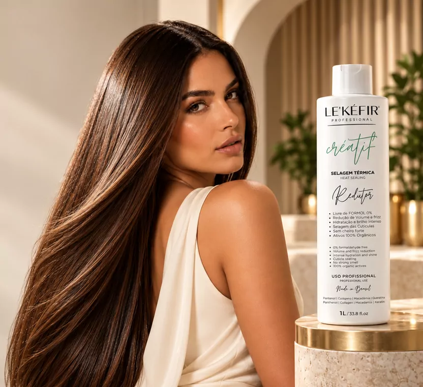
Créatif · Selagem Térmica Redutor
Reduz o volume, elimina o frizz e sela as cutículas para um cabelo alinhado com brilho espelhado, sem formol e sem cheiro forte.
A partir de R$ 197 · menos de R$ 14 por aplicação
Antes & depois
O Créatif age na fibra do fio para reduzir o volume e selar as cutículas. O resultado é um cabelo disciplinado, leve, macio ao toque e com aquele brilho de quem acabou de sair do salão.
Arraste a barra para comparar.
Quero esse resultado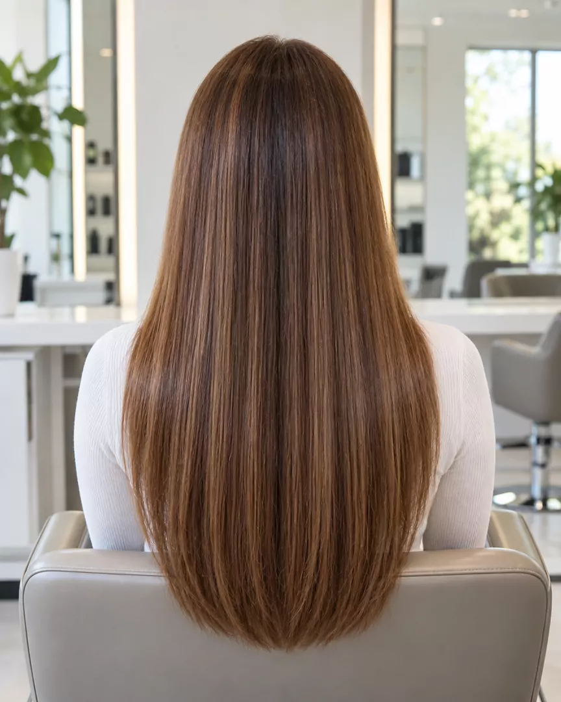
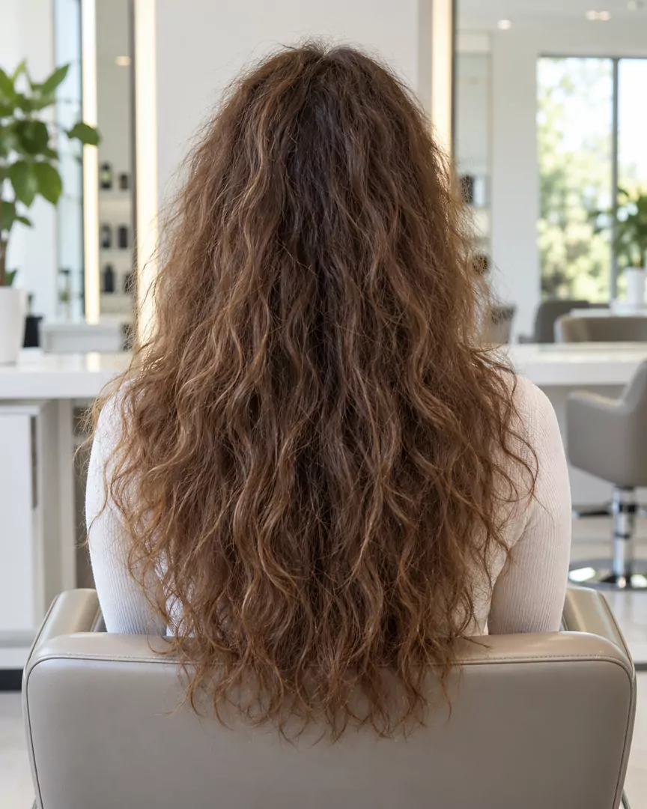
Aprovado por quem usa
Cabelos alinhados, sedosos e com brilho intenso. Veja o Créatif em ação.
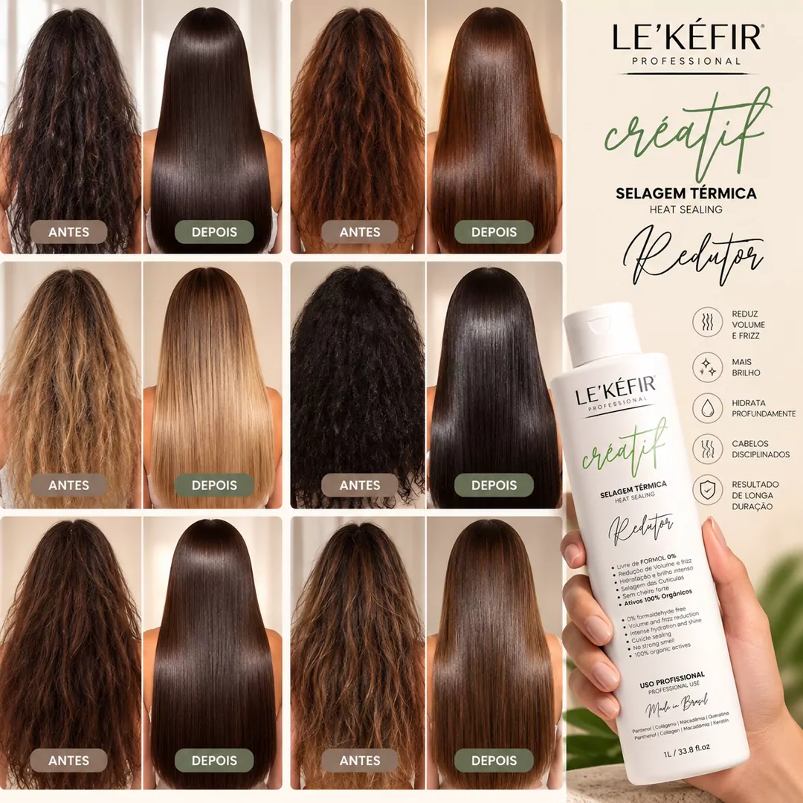
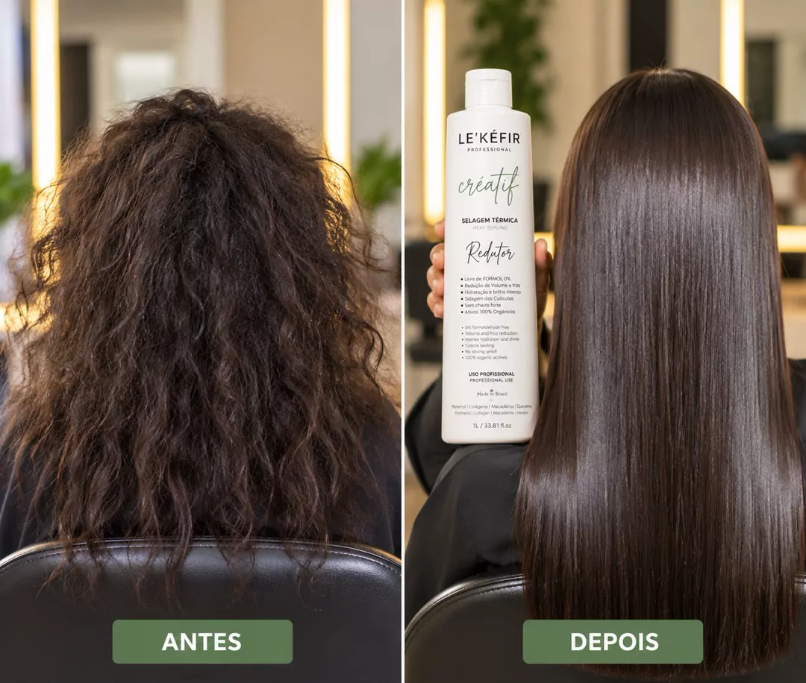
Resultados podem variar de acordo com o tipo e o histórico de cada cabelo.
Para todos os tipos de cabelo
Liso com frizz, ondulado, cacheado ou crespo. Também pode ser usado em cabelos com coloração, mechas e loiros.
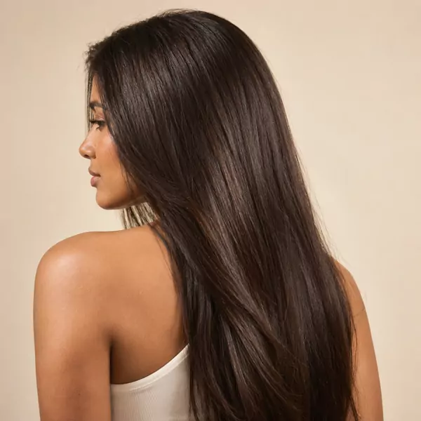
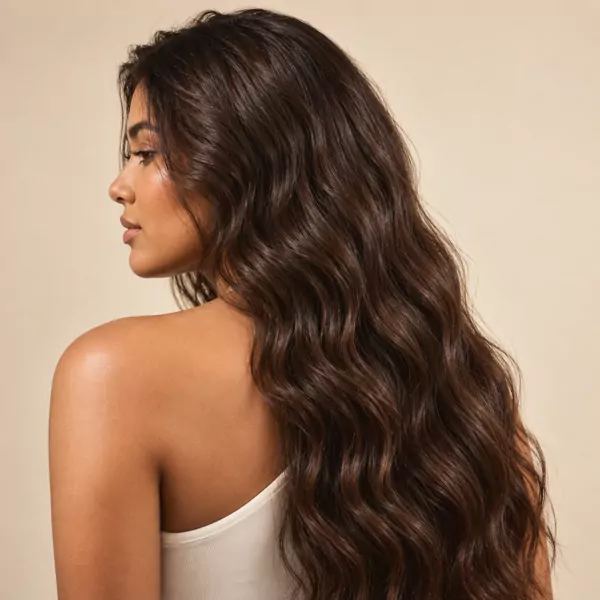
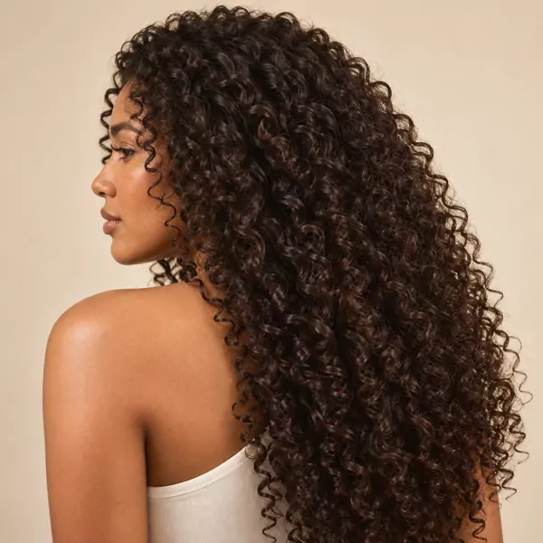
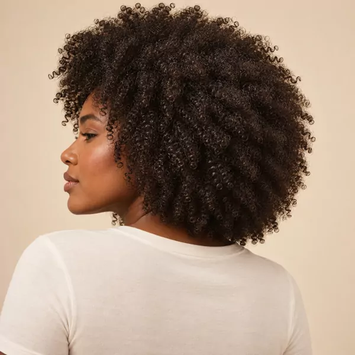
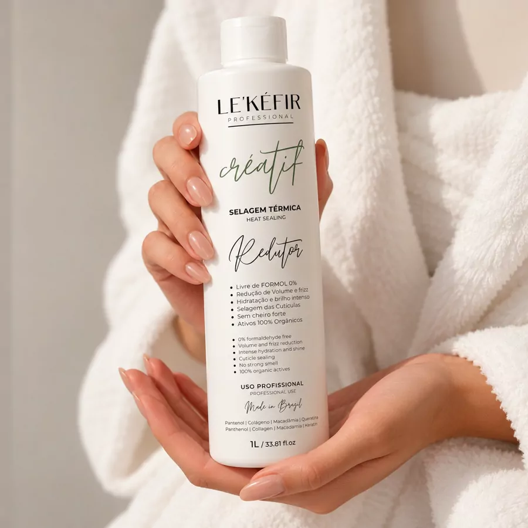
Benefícios do Créatif
Tecnologia profissional para um liso com cuidado da fibra, sem abrir mão do bem-estar durante a aplicação.
Fórmula exclusiva
Hidrata intensamente, dá flexibilidade e reduz a quebra dos fios.
Repõe massa e devolve elasticidade e corpo ao cabelo.
Óleo nobre que nutre, dá brilho e controla o frizz.
Reforça a estrutura do fio e ajuda a selar as cutículas.
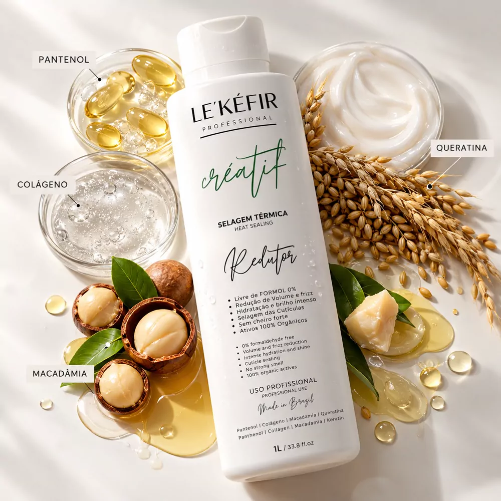
Rende muito mais
Um único frasco de 1 litro faz até 15 aplicações em cabelo longo. Faça a conta e veja a economia.
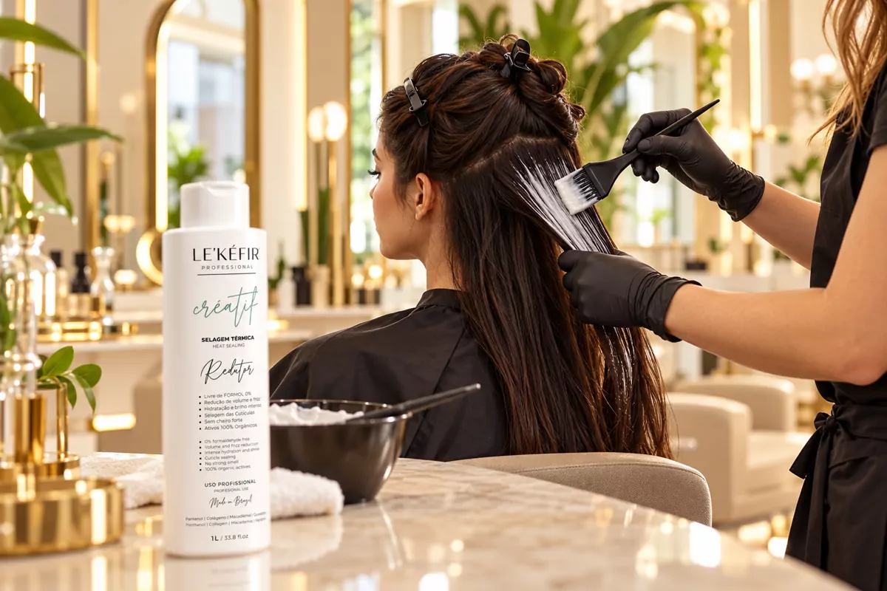
Em casa ou no seu salão de confiança
Produto de uso profissional. O passo a passo completo, com tempos e cuidados para cada tipo de cabelo, vem no Guia de Aplicação exclusivo que você recebe junto com o pedido.
Bônus exclusivo
Um guia completo em PDF, desenvolvido com o nosso químico responsável: teste de mecha, preparação, tempo de pausa ideal e os cuidados para manter o liso por mais tempo.
Quero o meu com bônus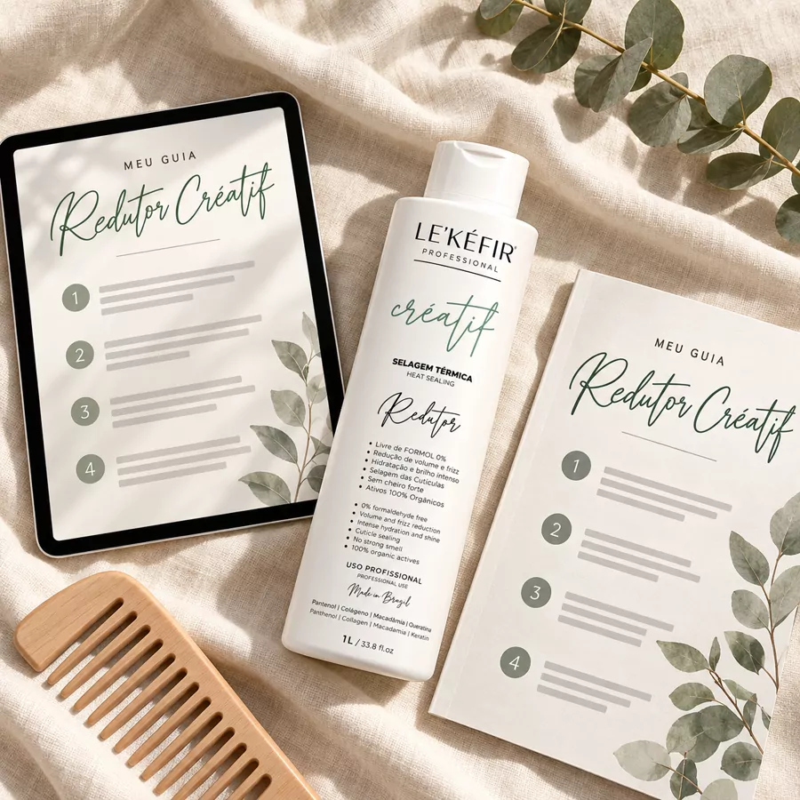
Registro na Anvisa
Mais transparência sobre o produto que você leva para casa.
Escolha o seu kit
Frete grátis para todo o Brasil · Envio imediato
Mudou de ideia? Seu dinheiro de volta.
Recebeu e não quer ficar? Você tem 7 dias para desistir. É só falar com a gente que devolvemos o seu dinheiro. Garantia do CDC.
Sim, eu quero o meu
Dúvidas frequentes
Sim. O Créatif foi desenvolvido para reduzir volume e frizz em todos os tipos de cabelo, do ondulado ao crespo. O tempo de pausa é ajustado de acordo com o tipo de fio, e você recebe tudo explicado no Guia de Aplicação.
Não. A fórmula é 0% formol, com ativos 100% orgânicos e sem cheiro forte, para uma aplicação confortável.
Pode. Para cabelos loiros, com mechas ou coloridos, o guia traz o ajuste de temperatura recomendado para não amarelar nem desbotar os fios.
O Créatif é um produto de linha profissional. Você pode ter o seu e levar ao seu cabeleireiro de confiança ou aplicar no salão de sua preferência, seguindo o Guia de Aplicação.
O frasco de 1 litro rende até 15 aplicações em cabelo longo, ou seja, menos de R$ 14 por aplicação no frasco unitário. Em cabelos curtos e médios, rende ainda mais.
A duração varia conforme o tipo de cabelo e os cuidados em casa. Recomendamos um intervalo de 3 meses entre aplicações, com hidratações semanais.
Recomendamos consultar o seu médico antes de realizar qualquer procedimento químico durante a gestação ou amamentação.
Após a confirmação do pagamento, o pedido é despachado e você recebe o código de rastreio por e-mail. O Guia de Aplicação em PDF é enviado junto com a confirmação da compra.
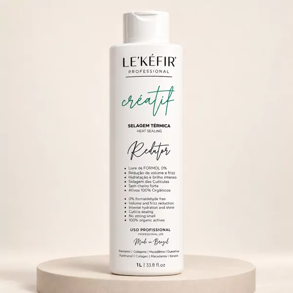
0% formol · sem cheiro forte · até 15 aplicações por frasco.
Quero meu Créatif